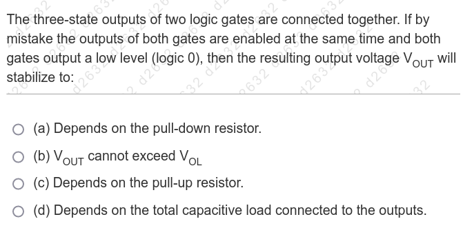
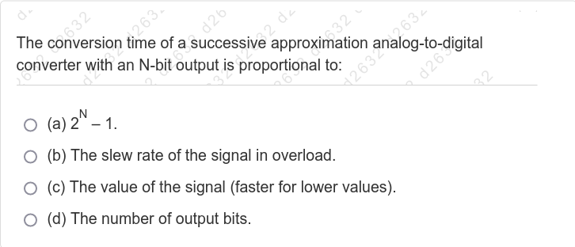
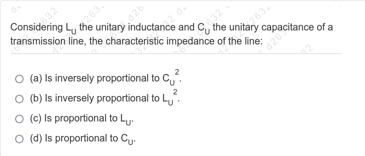
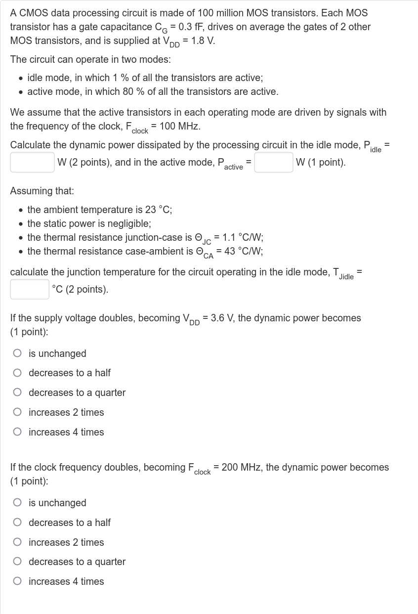
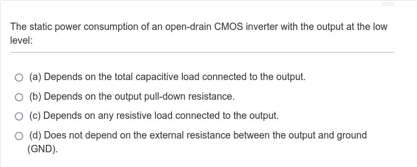
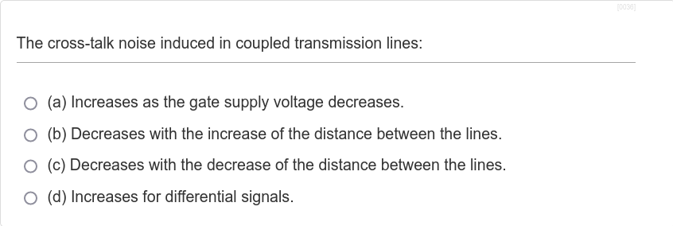
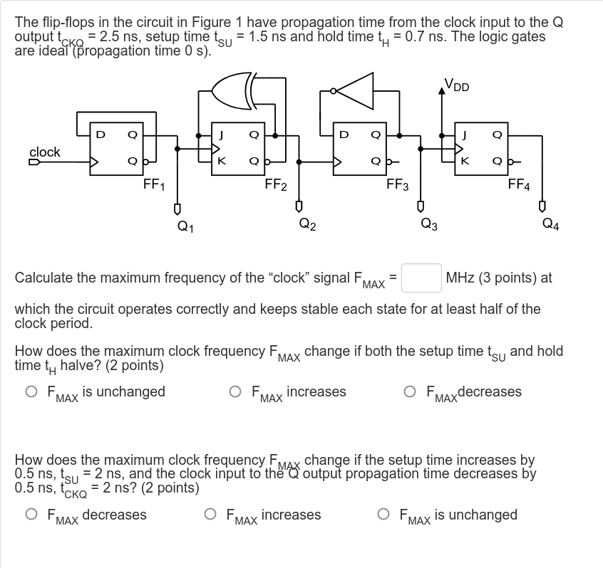
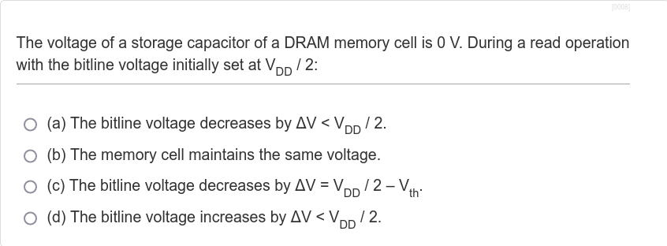
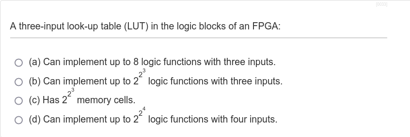

42. To'liq imtihon: 2021-yil 16-iyun
Tarkibi: 7 ta test va 2 ta katta masala (CMOS quvvati va issiqlik, 7 ball; flip-flop zanjiri, 7 ball).
1-savol. Three-state chiqishlar to'qnashuvi

Tarjima: ikki darvozaning three-state chiqishlari bir-biriga ulangan. Xato bilan ikkalasi bir vaqtda yoqilib, ikkalasi ham 0 chiqarsa, VOUT qayerda barqarorlashadi?
Yechim
Javob: (b) VOUT VOL dan oshmaydi.
Ikkala pastki tranzistor parallel bo'lib ishlaydi, umumiy qarshilik har biridan kichik. Bittasi yolg'iz ham VOUT ni VOL dan past ushlardi, ikkitasi birga undan ham pastroq ushlaydi. 2021-07 dagi open-drain savolining egizagi. (6-dars)
2-savol. SAR ADC ning o'zgartirish vaqti

Tarjima: N bitli SAR (ketma-ket yaqinlashish) ADC ning o'zgartirish vaqti nimaga proporsional?
Yechim
Javob: (d) chiqish bitlari soniga.
SAR har takt siklida bitta bitni aniqlaydi (MSB dan LSB gacha), demak N bit uchun N takt kerak. 2N − 1 bu tracking ADC ning eng yomon holati yoki flash dagi komparatorlar soni. (18-dars)
3-savol. Xarakteristik impedans

Tarjima: LU liniyaning uzunlik birligidagi induktivligi, CU esa sig'imi. Xarakteristik impedans qanday bog'liq?
Yechim
Javob: (a).
Z∞ = √(LU/CU). C maxrajda, demak Z∞ C ga teskari proporsional (aniqrog'i √CU ga). L suratda, demak Z∞ L ga teskari emas, shuning uchun (b) noto'g'ri. (c) "L ga proporsional" ham noto'g'ri, chunki √L ga proporsional. (d) butunlay teskari. Ekrandagi daraja belgisi formatlashda buzilgan (rasmiy yechimda ham "2" ko'rinadi), lekin teskari bog'liqlikni faqat (a) aytadi. Imtihonda shu mantiq bilan tanlang: "C ko'paysa Z∞ kamayadi". (25-dars)
4-savol. CMOS protsessor quvvati va issiqligi (masala, 7 ball)

Tarjima: sxemada 100 million MOS tranzistor bor. Har birining gate sig'imi CG = 0.3 fF, har biri o'rtacha 2 ta boshqa tranzistor gate ini boshqaradi, VDD = 1.8 V. Idle rejimda tranzistorlarning 1 %, aktiv rejimda 80 % ishlaydi, chastota 100 MHz. Idle va aktiv rejim quvvatini, idle rejimdagi kristall haroratini (TA = 23 °C, θJC = 1.1 °C/W, θCA = 43 °C/W) toping. VDD yoki chastota ikki baravar bo'lsa quvvat qanday o'zgaradi?
Yechim
- Har tranzistorning yuklamasi: 2 ta gate → CL = 2·CG = 0.6 fF.
- Dinamik quvvat: P = N · F · CL · VDD². VDD² = 1.8² = 3.24 V².
- Idle: N = 1 % · 108 = 106. P = 106 · 108 · 0.6·10−15 · 3.24 = 0.194 W.
- Aktiv: N = 80 % · 108 = 8·107, ya'ni 80 baravar ko'p: 80 · 0.194 = 15.6 W.
- Issiqlik: θJA = 1.1 + 43 = 44.1 °C/W. TJ = 23 + 44.1 · 0.194 = 31.6 °C.
- VDD ×2 → P ∝ V² → increases 4 times.
- F ×2 → P ∝ F → increases 2 times.
Tuzoq: "drives the gates of 2 other transistors" degani CL = 2·CG. Uni unutsangiz hamma javob ikki baravar kam chiqadi. (6-dars, 30-dars)
5-savol. Open-drain inverterning statik quvvati

Tarjima: open-drain CMOS inverterning chiqishi past (0) bo'lganda statik quvvat iste'moli nimaga bog'liq?
Yechim
Javob: (d) chiqish va yer (GND) orasidagi tashqi qarshilikka bog'liq emas.
Chiqish 0 V da. Chiqish bilan yer orasiga ulangan rezistorning ikki uchida ham 0 V, undan tok oqmaydi. Tok faqat VDD ga ulangan pull-up rezistordan keladi, shuning uchun (c) "har qanday rezistiv yuklama" noto'g'ri. Open-drain da ichki pull-down rezistor yo'q, demak (b) ham noto'g'ri. Sig'im faqat o'tish paytida ta'sir qiladi, statik holatda emas, shuning uchun (a) ham noto'g'ri. (6-dars)
6-savol. Crosstalk

Tarjima: yonma-yon liniyalar orasidagi crosstalk (o'zaro xalaqit) shovqini haqida qaysi gap to'g'ri?
Yechim
Javob: (b) liniyalar orasidagi masofa ortsa kamayadi.
Crosstalk kuchlanish o'zgarishiga proporsional (kuchlanish kamaysa kamayadi, shuning uchun (a) teskari), simlar yaqinlashganda ortadi (shuning uchun (c) teskari) va differensial signallarda ancha kamayadi (shuning uchun (d) teskari). (28-dars)
7-savol. Flip-flop zanjiri, FMAX (masala, 7 ball)

Tarjima: FF lar uchun tCKQ = 2.5 ns, tSU = 1.5 ns, tH = 0.7 ns, darvozalar ideal. Sxema to'g'ri ishlab, har bir holat takt davrining kamida yarmida barqaror turadigan maksimal chastota FMAX qancha? tSU va tH ikkalasi yarimga tushsa FMAX qanday o'zgaradi? tSU = 2 ns ga oshib, tCKQ = 2 ns ga tushsa-chi?
Yechim
- Kuzating: har FF ning chiqishi keyingi FF ning taktiga ulangan (asinxron zanjir). Kechikishlar qo'shiladi.
- Eng yomon holat: hamma chiqish o'zgaradi (0000 → 1111). Q4 frontdan 4·tCKQ keyin barqarorlashadi.
- Holat davrning kamida yarmida barqaror turishi kerak: T = 4·tCKQ + T/2 → T/2 = 4·tCKQ → T = 8·tCKQ = 8 · 2.5 = 20 ns.
- FMAX = 1/20 ns = 50 MHz.
- Formulada tSU va tH yo'q (zanjirda faqat tCKQ qo'shiladi, va T = 20 ns ≫ tSU). Ular yarimga tushsa FMAX is unchanged.
- tCKQ = 2 ns → T = 16 ns → 62.5 MHz: FMAX increases (tSU oshgani ta'sir qilmaydi).
Batafsil vaqt diagrammasi bilan: 11-dars (asinxron hisoblagich: 9-dars).
8-savol. DRAM ni o'qish

Tarjima: DRAM katagidagi kondensatorda 0 V saqlangan. O'qishdan oldin bitline VDD/2 ga o'rnatilgan. O'qishda nima bo'ladi?
Yechim
Javob: (a) bitline kuchlanishi ΔV < VDD/2 ga kamayadi.
Kalit ulanganda bitline (VDD/2) va kichik kondensator (0 V) zaryadni bo'lishadi. Bitline sig'imi katak sig'imidan ancha katta, shuning uchun bitline 0 V tomon ozgina tushadi va 0 V gacha yetib bormaydi. (b) noto'g'ri: zaryad bo'linganda katak kondensatori ham bitline dan zaryad olib, 0 V dan biroz ko'tariladi. O'qish katakni buzadi, shuning uchun keyin qiymat qayta yoziladi. (22-dars)
9-savol. 3 kirishli LUT

Tarjima: FPGA mantiqiy blokidagi 3 kirishli LUT haqida qaysi gap to'g'ri?
Yechim
Javob: (b) 3 kirishli 223 = 256 ta funksiyani bajara oladi.
3 kirish → 23 = 8 ta katak (shuning uchun (c) noto'g'ri, 256 katak emas). Har katakka 0 yoki 1 yoziladi, ya'ni 8 ta katakni 28 = 256 xil to'ldirish mumkin. Har to'ldirish bitta funksiya. (10-dars)
Natijani baholang
| Savol | Javob | Mavzu | Dars |
|---|---|---|---|
| 1 | b | three-state to'qnashuvi | 6 |
| 2 | d | SAR vaqti | 18 |
| 3 | a | Z∞ = √(L/C) | 25 |
| 4 | 0.194 W; 15.6 W; 31.6 °C; ×4; ×2 | CMOS quvvati, issiqlik | 6, 30 |
| 5 | d | open-drain statik quvvat | 6 |
| 6 | b | crosstalk | 28 |
| 7 | 50 MHz; unchanged; increases | asinxron zanjir | 11 |
| 8 | a | DRAM o'qish | 22 |
| 9 | b | LUT | 10 |
📝 Konspekt
- Parallel chiqishlar ikkalasi 0 → VOUT ≤ VOL. Open-drain 0 da: yerga ulangan rezistor tok olmaydi.
- SAR vaqti ∝ N; flash vaqti N ga bog'liq emas.
- Crosstalk: masofa ↑ → ↓, kuchlanish ↑ → ↑, differensial → ↓.
- DRAM: bitline VDD/2 dan saqlangan qiymat tomon ΔV < VDD/2 ga siljiydi; o'qish buzadi.